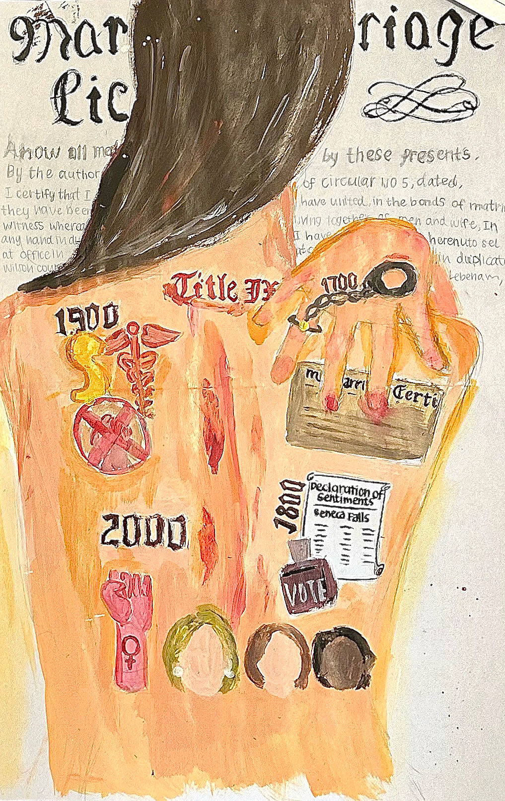

Passions
Welcome to some of my other passions.
OurEducation
OurEducation allowed me to raise awareness on the issue surrounding sexual harassment, a “sensitive” topic that had been suppressed and underemphasized in China. We emphasize the significance of educating teenagers about consent, sexual harassment, and personal boundaries. It is not enough to simply empower victims; we must teach everyone, regardless of gender, about the consequences of these issues and to allow everyone to be aware about it.
A blog article I’ve written on discussing what is sexual harassment within China’s current legal legislations:
AP Noteable
During 10th grade when I was taking my first AP course, AP Human Geography, I really wanted useful and not outdated helpful study notes. This desire then continued when I saw some of my 9th-grade peers struggle with their AP course choices selection. At that time, I made the decision to develop a platform that would help high school students who were having trouble transitioning to life in an American high school and incoming highschoolers who were uncertain about the high school experience academically.
Fast Forward to today, AP Noteable (www.apnoteable.com) has expanded its reach greatly by forming cooperation with nearby Chinese American college counseling businesses in California. Our vibrant community of 137 members regularly hosts seminars on a variety of subjects, including essay writing techniques. We also provide free, individualized college profile evaluations, college recommendations, and post notes and study guides from former AP students who have mastered that course with a result of more than 200 daily visitors to the AP Noteable website now.
Other Interesting Projects
In my final US History project, I portrayed the evolution of women’s rights and progress over the four centuries. Through the use of symbols on the girl's skin, I have portrayed these changes in my work, from the time when women were considered property, as seen in the chain and marriage certificate of the 17th and 18th centuries, to the crucial Seneca Falls suffrage protests of the 18th century, and the 19th-century advancements in abortion rights and Title IX. The 20th century saw significant advancements for women, with Hillary Clinton becoming the first woman to run for president and there was the first Black woman to serve in the Senate.
But the "glass ceiling" still exists, reminding us that our fight is far from over. The advancements we now take for granted were made possible by the difficulties and sacrifices made by those who came before us. As women, it is our duty to carry those blood and tears with us.

In “The Great Gatsby”, Daisy is portrayed as a traditional woman during the time period who was constrained by patriarchal expectations. She had been taught that she could not marry a man from a lower social class and that she must marry someone of the same social status as her. This upbringing instilled in her a desire for wealth and status, which she valued more than love.
In our group Gatsby Party Project for AP English Language & Composition, we took a feminized approach to it, we decided to do it on the feminism lens where I came up with the idea to attach tags onto our clothing/jewelry to represent how Daisy is seen by Gatsby in the book. It became clear as we read that Gatsby didn't see Daisy as a woman he adored or a lover, but rather as a status and riches symbol, the personification of "old money" and his American dream. I thought of the idea after reading a research essay on the feminism lens of the book and real life situations where women were being objectified. The tags suggest that Daisy's wealth and status were significant indicators of her social status and her world view. The book also speculates on Gatsby's perceptions of Daisy.The tags can imply that Gatsby not only desired Daisy as a person, but also coveted her family's wealth, particularly their established family old money. Daisy's privileged upbringing and social status can be attributed to Gatsby's confession to Nick in chapter 8 that she is the first good girl he knows. The tags can therefore imply that Gatsby saw Daisy through the lens of her material success and the riches that surrounded her which he never can have no matter how successful he becomes.
© Copyright 2023 Celena Wang. All Rights Reserved
Contact: celenawangwxt320@gmail.com
Phone: (626) 400-3483